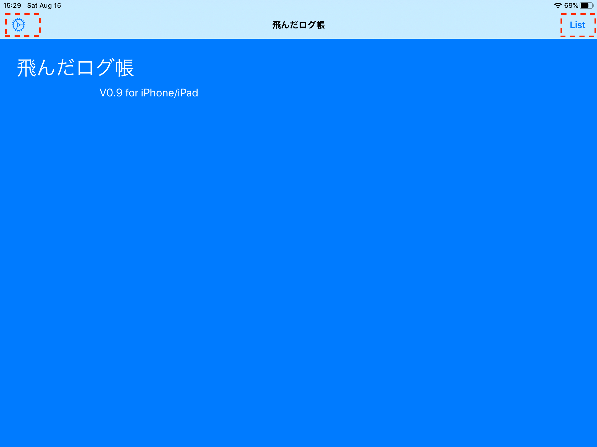
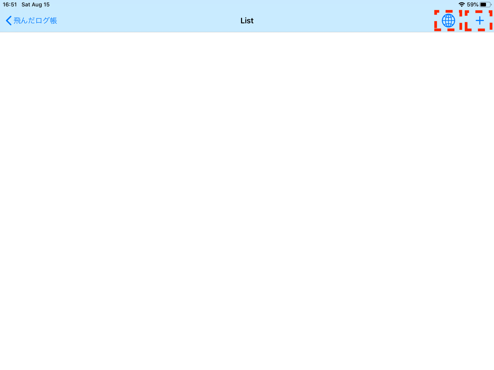

対象機種）当アプリは、 iOS 13.2 以上で動きます。iPhone6S 以降 / iPad第五世代以降 /iPad Air2 以降が該当します。
説明画像) 説明資料は一部、開発中のものを含みます。iPad版での画像を使います。iPhone版 は少しイメージが違うかもしれませんが、基本的には iPhone に合うように画面設計しています。iPad だと余白が多くなります。
１） アプリのアイコンクリックで起動します。起動画面はシンプルです。
２）トップ画面からは、設定画面/一覧表示画面に遷移できます。次は、「設定ボタン」を押して設定画面に飛ばします。

３）設定画面では、アプリの概要説明が記述されています。また、トップ画面用の、初めの一言 / 画像 を設定することができます。これでトップ画面の殺風景感から開放されますね。次は、「FlighLogBookボタン」を押してトップ画面に戻ります。
４）トップ画面に、設定画面で設定した 初めの一言 / 画像が表示されます。次は「Listボタン」を押して一覧画面に飛ばします。
５）登録されているログの件数が0件の一覧画面が表示されます。この画面からはログ登録画面/地図表示画面に遷移できます。次は「＋ボタン」を押し登録画面に飛ばします。登録可能件数は現時点では20件です。すでに20件登録されている場合はエラーとなり、次の画面を表示することはできません。

６）登録画面では、フライトログ情報を入力します。この画面からはスキャン画面に遷移できます。
「＋ボタン」を押すと登録を完了します。次はカメラを起動したときに一度だけ現れる確認画面です。
- 日付は必須入力項目です。
- 写真も貼り付けることができます。
- ３レター空港コードは空港の場所を地図にプロットするために使われます。
- 手元に搭乗券がある場合、「カメラボタン」を押して搭乗券をスキャンして入力するとお手軽です。二次元バーコードでは登録できませんのでご注意ください。
７）登録が完了すると一覧画面に戻ります。今、登録したログが追加されています。一覧表示で、ログをスワイプして削除できます。


８）次は「地図ボタン」を押し地図画面に飛ばします。

９）地図に簡易航空路がプロットされます。地図は拡大/縮小/移動などの操作が可能です。３レター空港コードは、日本を中心に一部の空港だけがアプリ内部に登録されていますので、簡易航空路が描画できないフライトもでてきます。この画面のタイトルに 全ログ件数のうち、描画できた件数を表示しています。（例： 一件表示は、Mapping(1/1) )
以上でアプリの説明を終わります。
作者：加納延康